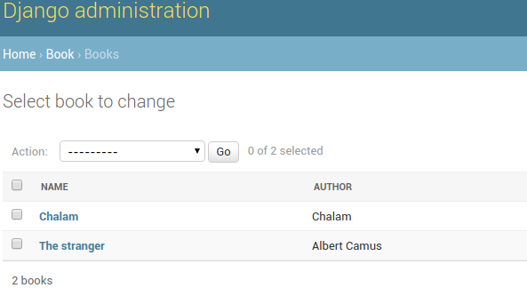

Hyperlink Foreignkey Fields To Its Change View In Admin¶
Consider Book model which has Author as foreignkey.
from django.db import models
class Author(models.Model):
name = models.CharField(max_length=100)
class Book(models.Model):
title = models.CharField(max_length=100)
author = models.ForeignKey(Author)
We can register these models with admin interface as follows.
from django.contrib import admin
from .models import Author, Book
class BookAdmin(admin.ModelAdmin):
list_display = ('name', 'author', )
admin.site.register(Author)
admin.site.register(Book, BookAdmin)
Once they are registed, admin page shows Book model like this.
While browsing books, we can see book name and author name. Here, book name field is liked to book change view. But author field is shown as plain text.
If we have to modify author name, we have to go back to authors admin page, search for relevant author and then change name.
This becomes tedious if users spend lot of time in admin for tasks like this. Instead, if author field is hyperlinked to author change view, we can directly go to that page and change the name.
Django provides an option to access admin views by its URL reversing system. For example, we can get change view of author model in book app using reverse(“admin:book_author_change”, args=id). Now we can use this url to hyperlink author field in book admin.
from django.contrib import admin
from django.utils.safestring import mark_safe
class BookAdmin(admin.ModelAdmin):
list_display = ('name', 'author_link', )
def author_link(self, book):
url = reverse("admin:book_author_change", args=[book.author.id])
link = '<a href="%s">%s</a>' % (url, book.author.name)
return mark_safe(link)
author_link.short_description = 'Author'
Now in the book admin view, author field will be hyperlinked to its change view and we can visit just by clicking it.
Depending on requirements, we can link any field in django to other fields or add custom fields to improve productivity of users in admin.